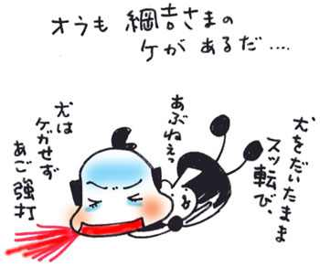

| 中野の「囲町公園」は、なかなかマニアックな江戸の残り香が漂う場所だ。思い切り鼻の穴をひろげても、その香りは、あまりにもヒッソリとしすぎていて、なかなか感知することは難しい。 「犬を園内に入れないでください 中野区」 わたしはこの看板を見た瞬間、そりゃないワン、と犬のように鼻をク〜ンとならして、この界隈で大切に育てられていたであろう同士（？）たちに思いを馳せた。 犬屋敷があったことをなぜアピールしないのか、と不思議に思いつつ、中野区役所へ向かった。 「かこい この付近一帯は、徳川五代将軍綱吉の時代（元禄八年）に作られた「犬屋敷」があったところです。犬の像はその歴史を語り伝えようと、東京セントラルライオンズクラブが寄贈したものです。 1991.10 中野区」 犬屋敷というよりは、寄贈した団体の方が、中野区の歴史にその名を刻んでいるような印象を受けた。銅像ができたのがたった一六年前で、なかなかバブリーな頃である。「犬屋敷の歴史を伝えたい！」という純粋なる想いに欠けている印象を受けるのは、わたしだけだろうか。まあ、いいけど。 たとえば長野県駒ヶ根に「霊犬・早太郎」という伝説の山犬がいる。化け物の老ヒヒと戦って村人たちを救った、と伝承されているのだが、今でもそのスター性は健在で、「早太郎温泉」、「早太郎最中」などその名を冠した公共施設や名産品がある。以前、駒ヶ根に行ったときに商店街で「霊犬・早太郎」と書かれた大きな看板を見たこともあった。 ──もしも犬屋敷に、こんな伝説的なスター犬が、一頭でもいたら。 『綱吉はおかしいワン、と犬蜂起のリーダになった、犬』 といったシンボリックな犬がいれば、この地の盛り上がり方は少し違ったのではないか。  |
| 松井雪子（まつい・ゆきこ） 1967年、東京生まれ。1988年、大学在学中に『ASUKA』（角川書店）で漫画を描き始める。漫画単行本に『絶望ハンバーグ工場』（文藝春秋）、『マヨネーズ姫』（青林堂）、『犬と遊ぼ！』（講談社）『おんなのこポコポン』（竹書房）など。2001年、雑誌『群像』（講談社）で小説も書き始める。小説単行本に『チル☆』『イエロー』（ともに講談社）、エッセイに『奇跡でも魔法でもない犬語の話し方』（幻冬舎）、絵本に『クウとポーのクリスマス』（平凡社）がある。 |